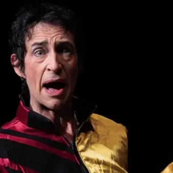

gio 15 ott · dalle 20:30
Teatro Miela - Hamlet Double Bill
Spettacolo in lingua originale liberamente ispirato all’Amleto di William Shakespeare di e con Adrian Hughes, Alberto Ierardi e Giorgio Vierda musiche arrangiate da Alberto Ierardi (chitarra) e Adrian Hughes (flauto traverso) costumi Adrian Hughes produzione La Ribalta Teatro e…
 Indicazioni
Indicazioni
- Costi e prenotazioni
- Costo non indicato · Prenotazione non indicata
- Programma
- Programma da verificare. Apri la fonte ufficiale per orari e possibili aggiornamenti.
- In caso di maltempo
- Nessuna indicazione specifica pubblicata.
- Note
- Acquisito automaticamente dalla fonte.
L’EVENTO
Descrizione completa
Spettacolo in lingua originale
liberamente ispirato all’ Amleto di William Shakespeare
di e con Adrian Hughes, Alberto Ierardi e Giorgio Vierda
musiche arrangiate da Alberto Ierardi (chitarra) e Adrian Hughes (flauto traverso)
costumi Adrian Hughes
produzione La Ribalta Teatro e Theatre 63 (The English Theatre Company)
con il sostegno de I Sacchi di Sabbia
vincitore del premio “ShakeSphere2024”, promosso da ESFN (European Shakespeare Festivals Network)
Nel mondo anglosassone “double bill” è la programmazione di due B-movie appartenenti allo stesso genere. Così Hamlet Double Bill sono due atti unici che danno voce ai personaggi minori dell’ Amleto , gli Attori e i Becchini. Un viaggio brillante e rocambolesco, impreziosito dalle musiche eseguite dal vivo, che intrecciano la tradizione inglese del Cinquecento con la musica popolare italiana.
Nella prima parte, The Play’s The Thing, l’atmosfera è brillante e rocambolesca, ricca di giochi di teatro nel teatro. Protagonisti sono gli Attori che, nel testo shakespeariano, mettono in scena “La Trappola per Topi”, lo stratagemma che permette ad Amleto di smascherare la colpevolezza dello zio Claudio. Li immaginiamo appena rientrati dal tour in Danimarca, pronti a raccontare al pubblico contemporaneo — tra goffaggini, sorprese e grande entusiasmo — la storia di Hamlet in soli 25 minuti.
La seconda parte, The Rest Is Silence, ha un tono più cupo e malinconico. Seguiamo i due becchini incaricati di seppellire tutte le vittime della tragedia. Mentre scavano, si imbattono negli spiriti di Claudio, Ofelia, Amleto e Gertrude, che tornano in scena per cercare una forma di riscatto o per raccontare la propria versione dei fatti, nella speranza di non essere dimenticati. Prevendita:
biglietteria del teatro (tel. 0403477672) tutti i giorni dalle 17.00 alle 19.00
Ticketpoint Galleria Rossoni (Corso Italia 6/C) da lunedì a sabato 8.30-12.30 e 15.00-19.00
Online: www.vivaticket.com
IL PROGRAMMA
Programma e orari
Appuntamenti raccolti dalle fonti elencate. Dove manca un orario, non è ancora disponibile in questa scheda.
Programma pubblicato
- Dal 2026-10-15 al 2026-10-15
INFORMAZIONI UTILI
Prima di partire
- Controllare la fonte prima di partire.
ORGANIZZAZIONE